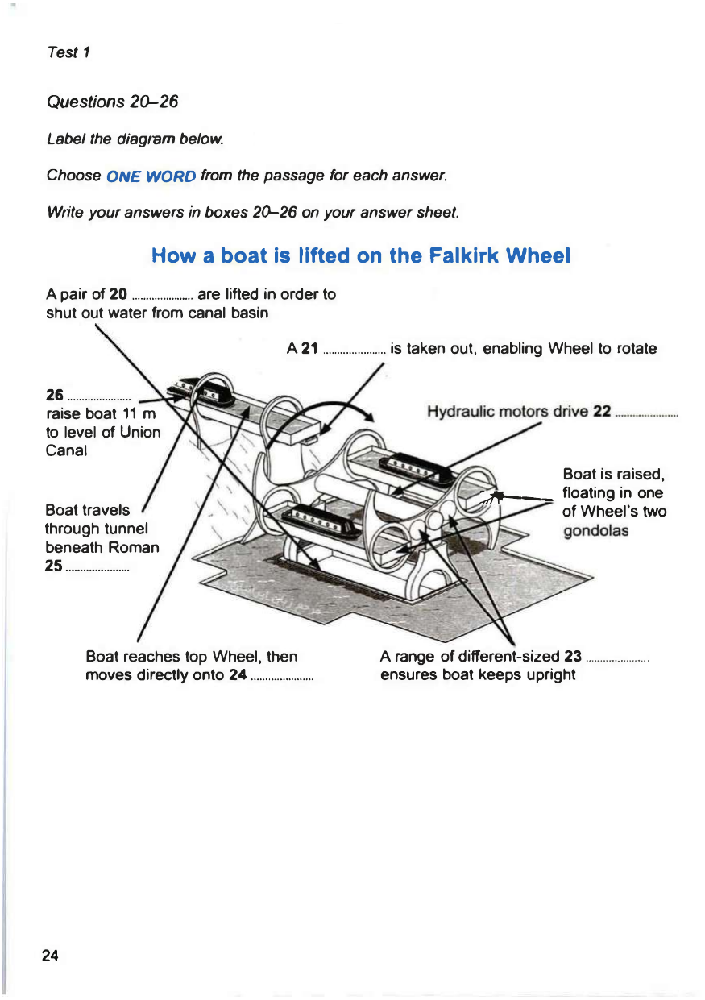

If you have had a hard time reading IELTS passages, we do suggest you to learn phrase chunking which can boost your condfidence substantially.Indeed, we can guarantee your significant improvement in reading academic passages including IELTS after reading the following article. In fact, it is your lucky day because you will perhaps find the root of your struggling with academic reading. Moreover, identifying phrases is a crucial stepping-stone towards becoming a professional reader and writer.
The following are the steps of our algorithm through which you will learn the significance of phrase chunking when it comes to answering sentence completion questions.
- read the last three paragraphs of the samplein which the answers to quetsions 20 to 26 are located
- read the questionsand then try find the answers in the paraphraphs
- think about the missing
This part is written for the second image
the last part